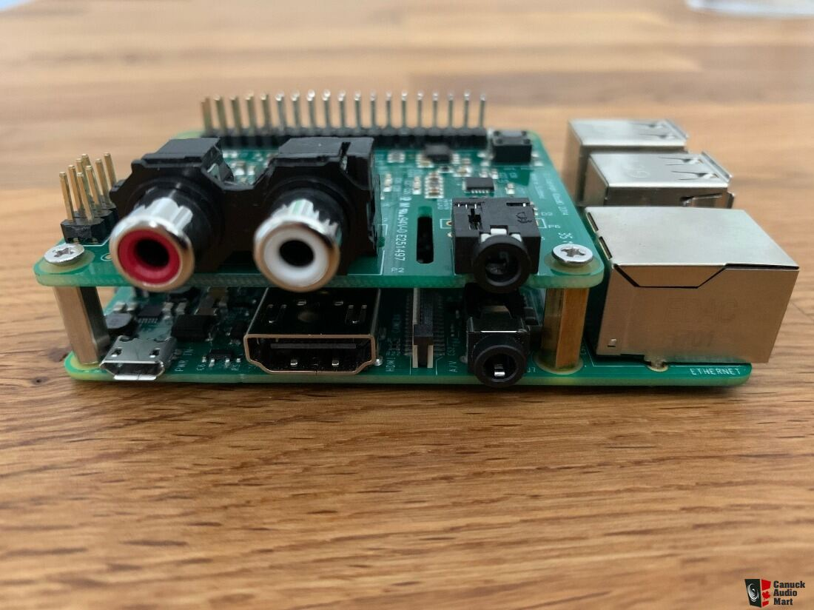
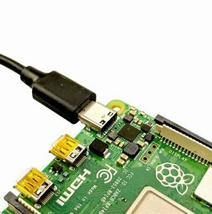
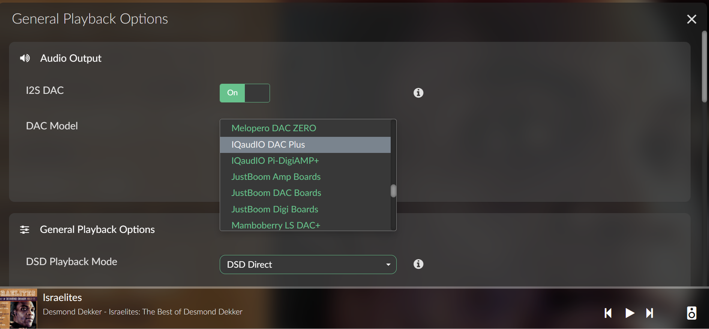

Volumio Setup
What this step covers
This page covers the complete Volumio setup process:
- Installing Volumio on a microSD card
- First boot on the Raspberry Pi
- Connecting Volumio to your Wi-Fi network
- Enabling the DAC
- Confirming audio playback
Step 1: Install Volumio on the SD card

- Go to https://www.raspberrypi.com/software/
- Download and install Raspberry Pi Imager
- Open the Imager and click Choose OS
- Select Media Player OS → Volumio
- Select your microSD card as the target
- Click Write and wait for it to complete
When finished, safely eject the SD card.
Step 2: Assemble the hardware
- Ensure the Raspberry Pi is powered off
- Install the DAC HAT onto the GPIO header
- Secure it using the supplied bolts
- Insert the microSD card into the Pi
Step 3: Power up
Connect the power supply and allow the Raspberry Pi to boot.
First boot can take a couple of minutes — be patient.
Step 4: Connect to Volumio’s Wi-Fi

- Wait for a Wi-Fi network called Volumio or Volumio-XXXX
- Connect to it using your phone, tablet, or computer
- Follow the on-screen setup to connect Volumio to your home Wi-Fi
Step 5: Open the Volumio interface
Open a browser and go to:
- http://volumio.local
- or the IP address shown in your router
Step 6: Enable the DAC
In Volumio:
- Open Playback Options
- Enable I²S DAC
- Select your DAC model
- Click Save
If you hear no sound later, come back here first.
Step 7: Add music & test playback
- USB storage
- Network shares
- Streaming services (Qobuz / TIDAL)
Start playback and confirm audio is coming through your system.